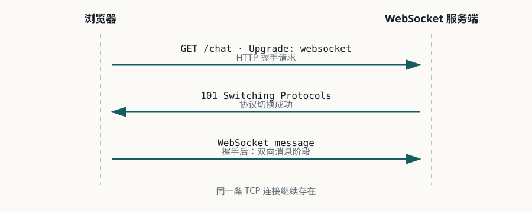

Lesson 0001 · Protocol
看懂 WebSocket 的第一次握手
本课的唯一目标：看到一条 WebSocket 握手记录时，你能判断它是否成功，并解释关键字段的职责。
1. WebSocket 为什么会出现
理解 WebSocket 的第一步不是背 API，而是看清它要解决的历史问题：传统 HTTP 以“客户端发起请求、服务端返回响应”为基本交互模型。这个模型非常适合页面、表单和普通 REST 请求，但服务端没有一个天然、低延迟的通道主动通知浏览器。
1.1 从轮询到长轮询
早期实时页面通常采用轮询（polling）：浏览器每隔几秒发送一次 HTTP 请求，询问“有没有新数据”。实现简单，但即使没有新消息，也会反复传输请求头、建立调度和执行服务端逻辑；轮询间隔越长，用户看到消息越晚，间隔越短，空请求和资源消耗越多。
长轮询（long polling）把请求保持一段时间：服务端有新消息时立即响应，没有消息时等到超时再响应，客户端随后重新发起请求。它减少了空响应，也能降低平均通知延迟，但每次响应结束后仍要重建请求；超时、代理、连接数和异常重试会成为系统的一部分。
在此期间还出现过 Comet、HTTP streaming 等实现思路。它们都在尝试延长 HTTP 的有效通信时间，但浏览器、代理和服务器对长时间未结束的 HTTP 响应处理并不总是一致，应用层也需要自行约定消息边界和断线行为。
1.2 WebSocket 的核心变化
WebSocket 采用一次 HTTP Opening Handshake，然后把同一条 TCP 连接升级为 WebSocket 连接。升级成功后，通信不再遵循“一个请求对应一个响应”的消息模型：客户端和服务端都可以在连接上主动发送消息。协议还定义了帧、Ping/Pong、Close、文本和二进制消息等基础能力。
| 阶段 | 主要解决的问题 | 引入的代价 |
|---|---|---|
| 轮询 | 用已有 HTTP 快速实现定期查询 | 重复请求、空响应和额外延迟 |
| 长轮询 | 减少无效响应，让有消息时尽快返回 | 超时、重建请求、代理和连接管理更复杂 |
| WebSocket | 在一条连接上实现双向、低延迟消息通信 | 心跳、断线重连、连接数、鉴权、扩容和背压 |
这也是本课程的选型边界：WebSocket 适合聊天、实时协作、在线状态和服务端推送；它不是 HTTP 的全面替代品。普通查询、资源下载、幂等写入和公开缓存内容，通常仍应使用普通 HTTP。WebSocket 解决的是通信方向和连接模型，不会自动解决消息可靠性、离线存储、用户鉴权或多实例路由。
1.3 标准化与今天的实现
WebSocket 协议由 RFC 6455 §1.1 定义；浏览器通过 WebSocket API 暴露客户端能力。标准保留 HTTP Upgrade 作为入口，是因为这样可以复用已有的端口、Host 路由、代理和认证基础设施；但握手完成后，后续数据应按 WebSocket 帧处理，而不是继续当作普通 HTTP 响应。
因此，看到一条 WebSocket 连接时要分成两个阶段判断：握手阶段先确认 HTTP 101 和相关字段；连接阶段再检查帧、心跳、关闭码、业务协议和资源清理。本课只把第一阶段讲透，后续课程再处理帧和生命周期。
2. 先建立模型
WebSocket 不是一开始就脱离 HTTP。客户端先发送一个特殊的 HTTP 请求，请求服务端把这条连接从 HTTP 协议切换到 WebSocket 协议。

2.1 和轮询、长轮询的区别
“实时”不是只有 WebSocket 一种实现。选型时要比较连接方向、请求频率、延迟和服务端资源，而不是只比较 API 是否方便。

| 模型 | 服务端推送 | 请求行为 | 主要代价 |
|---|---|---|---|
| 反复轮询 | 不能主动推送，客户端定期询问 | 无论有没有新消息都会产生请求 | 重复请求、额外响应延迟 |
| 长轮询 | 服务端有消息或超时后响应 | 响应结束后客户端再次发起请求 | 请求反复建立，超时和连接数管理复杂 |
| WebSocket | 连接建立后双方都可主动发送 | 一次 HTTP Upgrade，之后复用长连接 | 心跳、断线、连接数和扩容管理 |
3. 请求与响应
GET /chat HTTP/1.1 Host: example.com Upgrade: websocket Connection: Upgrade Sec-WebSocket-Key: dGhlIHNhbXBsZSBub25jZQ== Sec-WebSocket-Version: 13 HTTP/1.1 101 Switching Protocols Upgrade: websocket Connection: Upgrade Sec-WebSocket-Accept: s3pPLMBiTxaQ9kYGzzhZRbK+xOo=
| 字段 | 作用 | 排错时看什么 |
|---|---|---|
Upgrade: websocket | 请求切换到 WebSocket。 | 是否被代理或服务端丢弃。 |
Connection: Upgrade | 声明这是一次协议升级。 | 是否仍被当作普通 HTTP 请求处理。 |
Sec-WebSocket-Key | 本次握手的随机挑战值。 | 请求是否带上，服务端是否据此计算响应。 |
Sec-WebSocket-Version: 13 | 声明协议版本。 | 服务端是否支持该版本。 |
101 | HTTP 层面的协议切换成功。 | 不是 101 就先排查握手，不要先看消息处理。 |
Sec-WebSocket-Accept | 服务端根据 Key 计算出的握手确认值。 | 是否存在且与客户端校验结果一致。 |
Sec-WebSocket-Key / Sec-WebSocket-Accept 只证明双方完成了协议握手，不能证明用户身份。身份认证仍然需要 Cookie、Authorization、短期票据或应用层逻辑。
4. Accept 到底怎么来的
服务端将客户端的 Key 与 RFC 6455 固定 GUID 拼接，计算 SHA-1，再进行 Base64 编码：
base64(sha1(Sec-WebSocket-Key +
"258EAFA5-E914-47DA-95CA-C5AB0DC85B11"))
例如上面的 Key 是 RFC 6455 的示例值，最终 Accept 是 s3pPLMBiTxaQ9kYGzzhZRbK+xOo=。这一步是握手协议校验，不是登录校验。
RFC 6455 §4.2.2 是本课的主要依据；字段和计算规则以该章节为准。
5. 用 DevTools 观察握手
- 打开一个会建立 WebSocket 的页面，打开浏览器 DevTools。
- 进入 Network，过滤器选择 WS。
- 刷新页面，点击 WebSocket 请求。
- 在 Headers 中检查 Request Headers 和 Response Headers。
- 在 Messages 或 Frames 中确认握手之后确实出现了消息。
| 现象 | 第一判断 |
|---|---|
响应为 101 | HTTP 升级成功，继续检查帧、心跳和业务消息。 |
响应为 401 或 403 | 优先检查认证、Origin 或网关策略。 |
响应为 404 | 优先检查 Host、Path、路由和 WebSocket endpoint。 |
响应为 200 | 服务端可能把请求当成普通 HTTP 处理，检查 Upgrade 转发和路由。 |
| 一直 Pending 后超时 | 检查网络、代理、网关 idle timeout、服务端日志和监听地址。 |
6. 练习：先回忆，再验证
不要查资料，先回答下面 5 个问题。答案直接写在聊天中：
-
为什么 WebSocket 握手使用 HTTP，而不是直接发送 WebSocket 帧？
查看答案
为了复用现有的 HTTP 基础设施，例如端口、代理、网关、Host 路由和认证机制。握手成功后，再把同一条 TCP 连接升级为 WebSocket 连接。
-
如果响应是 HTTP 200，为什么不能认为 WebSocket 已经建立？
查看答案
200只表示普通 HTTP 请求处理成功。协议升级必须返回101 Switching Protocols，否则客户端不能按 WebSocket 帧继续通信。 -
Sec-WebSocket-Key和登录身份之间有什么关系？查看答案
没有身份认证关系。它是本次握手的随机挑战值，用来生成
Sec-WebSocket-Accept，证明服务端理解 WebSocket 协议。用户身份仍需通过 Cookie、Authorization 或 Token 等机制验证。 -
在 DevTools 中，你会先看哪些字段来判断失败发生在握手阶段？
查看答案
先看响应状态码是否为
101，再检查请求中的Upgrade、Connection、Sec-WebSocket-Key、Sec-WebSocket-Version，以及响应中的Upgrade、Connection、Sec-WebSocket-Accept。同时检查路径、Host、Origin 和认证信息。 -
什么情况下长轮询可能比 WebSocket 更合适？
查看答案
当客户端或代理环境不适合保持 WebSocket 长连接、消息频率较低、只需要服务端到客户端的近实时通知，且系统更希望复用成熟 HTTP 基础设施时，长轮询可能更简单。
快速检查：哪一个状态码表示 HTTP 层协议切换成功？